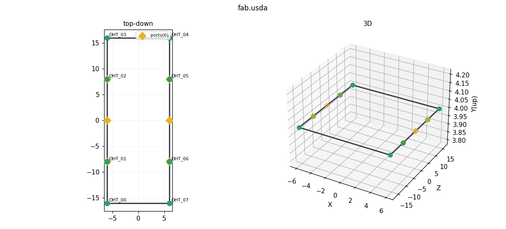
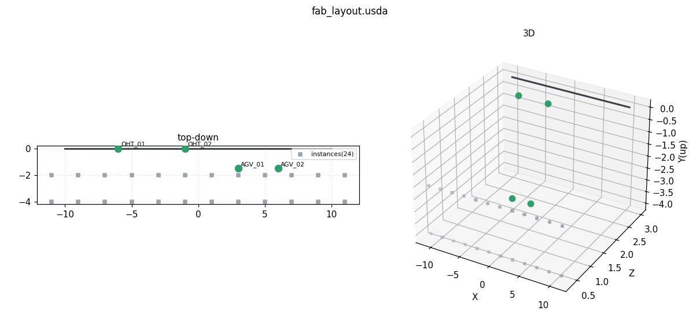

Phase 11 · Station 07
FabSim → USD 익스포트 — 도메인 모델을 씬으로
05는 usd-core로 씬을 손으로 조립했다. 이 스테이션은 방향이
반대다 — 이미 있는 도메인 모델(FabSim의 C# DES)을 USD로 내보낸다. 관통선은
한 줄로 이어진다: FabSim(C# DES) → fab.usda(OpenUSD) → Omniverse(Phase 12).
실물 트윈이 하는 일이 정확히 이것이다 — "내 시스템 상태를 표준 씬 포맷으로 뽑아 넘긴다".
관통선 — 커리큘럼을 한 줄로 꿴다
Phase 5에서 만든 미니 팹 시뮬레이터는 C# DES로 레일 위 OHT를 굴렸다. Phase 8은
그 시뮬레이터를 디지털 트윈의 골격으로 세웠다. Phase 11은 USD라는
산업 표준 씬 포맷을 익혔다. 이 스테이션은 그 셋을 잇는 다리다 — FabSim의 도메인
모델(레일 그래프·비히클)을 순회해 fab.usda 한 장으로 내보내고, 그 파일을 Phase 12의
Omniverse가 연다. 예제는 examples/fabsim-usd-export/에 있다.
fab.usda가 두 세계를 잇는 표준 교환물이며,
유효성은 usd-core로 되읽어 확인한다.
핵심 통찰 — "USD 쓰기는 그냥 텍스트"
이 익스포터는 USD SDK를 쓰지 않는다. 어떻게 가능한가? .usda는 사람이
읽는 ASCII 텍스트이기 때문이다. 도메인 모델을 순회하며 규칙에 맞는 문자열을 이어
붙이면 유효한 USD가 나온다(예제의 UsdaWriter.cs). 무거운 엔진이 필요한 쪽은
읽기·합성이다 — reference·variant·payload를 해석해 최종 씬을 구성하는
일(03의 LIVRPS)에는 컴포지션 엔진이 있어야 한다. 하지만 쓰기는 텍스트면 충분하다.
이 비대칭이 실무적으로 결정적이다. USD를 내보내는 쪽은 어떤 언어·런타임이든 될 수
있다 — C#·C++·심지어 쉘 스크립트라도 문자열만 뱉으면 된다. 그래서 벤더마다 다른 온갖 시스템이 자기
상태를 USD로 흘려보낼 수 있고, 이것이 USD가 산업 교환 포맷이 된 실용적 이유 하나다.
검증은 값싸게 읽는 쪽(usd-core, Phase 11)에 맡긴다 — 엔진이 열 수만
있으면 그 텍스트는 유효한 USD다.
.usda 텍스트를 두고, 내보내는 쪽은 문자열만 뱉으면 되지만
읽어 합성하는 쪽만 엔진을 요구한다. 익스포터가 SDK 없이 살 수 있는 이유이자,
USD가 교환 포맷으로 퍼진 이유다.
예제 구조 — twin-bridge와 같은 패턴
examples/fabsim-usd-export/는 Phase 8의 twin-bridge와 똑같은 요령으로
선다 — Unity 없이 헤드리스로 도는 .NET 콘솔이다. 비결은 FabSim의 시뮬레이션
소스를 복사하지 않고 링크하는 것이다. csproj가
FabSim-P8-Complete/Assets/Scripts/Sim/*.cs를 링크로 컴파일에 포함시킨다. 그래서
익스포터가 읽는 레일 그래프·비히클이 Unity의 FabSim이 굴리는 것과 글자 하나까지 같은
코드에서 나온다 — 단일 진리 원천(single source of truth). 복사였다면 두 벌이 서서히
어긋났을 것이다. Sim/*.cs는 UnityEngine에 무의존이라 콘솔에서 그대로 돈다.
| Prim 경로 | 타입 | 무엇을 담나 |
|---|---|---|
| /World/Fab/Rail | BasisCurves | 일방통행 루프 — 레일 그래프의 노드를 순서대로 이어 폐곡선으로 |
| /World/Fab/Ports/Port_00.. | Cube | 픽업/드롭 포트 마커 6개 |
| /World/Fab/OHT_00.. | Xform + Cube | 비히클 8대 — 이름 붙은 Xform에 드로어블 Cube "Body"를 자식으로 |
이름이 왜 중요한가. 비히클 Prim을 OHT_00, OHT_01…처럼
이름 붙여 두면, Phase 12의 Kit 확장(dt1.fabsim.viz)이 스테이지를 순회하며
이름으로 OHT를 스캔해 Body의 displayColor를 상태색으로
칠할 수 있다. 익스포터가 지금 부여하는 이름이 Phase 12에서 선택·채색의 손잡이가
된다 — 06에서 본 "인스턴스에 정체성을 준다"의 실전이다(그래서 대량이라도 PointInstancer가 아니라
개별 Xform으로 심는다).
실행과 검증 — 쓰고, 되읽어 확인한다
익스포터는 비히클 수와 시드를 인자로 받아 fab.usda를 쓴다. 검증은 05에서 익힌
usd-core로 되읽어 한다 — 엔진이 열고 순회할 수 있으면 그 텍스트는
유효한 USD라는 증거다.
# 1) FabSim 도메인 모델을 순회해 fab.usda 를 쓴다 (비히클 8대·시드 7)
dotnet run --project examples/fabsim-usd-export -c Release -- --out fab.usda --vehicles 8 --seed 7
# 2) 읽는 쪽(usd-core)으로 되읽어 구조를 확인 — 열리면 유효한 USD다
python -c "from pxr import Usd; s=Usd.Stage.Open('fab.usda'); print([str(p.GetPath()) for p in s.Traverse()])"
Traverse() 출력에 /World/Fab/Rail, /World/Fab/Ports/Port_00…,
/World/Fab/OHT_00…이 줄줄이 찍히면 관통선의 첫 마디가 성립한 것이다. 눈으로 보려면
05의 뷰어 설치(NVIDIA usdview 등)나 Omniverse로 fab.usda를 연다.
UsdaWriter — 텍스트 한 줄씩 쌓는 감
UsdaWriter.cs는 StringBuilder에 들여쓰기를 맞춰 USD 문법을 한 줄씩
이어 붙일 뿐인 얇은 텍스트 작성기다. BeginPrim이
def Xform "OHT_00" {를 열고, Translate·DisplayColor가
속성 줄을 얹고, EndPrim이 }로 닫는다. 아래는 비히클 하나를 내보내는
핵심 조각이다 — 이 짧은 순회가 SDK가 하던 일을 대신한다.
// Program.cs — 각 비히클을 이름 붙은 Xform(OHT_xx) + 드로어블 Cube "Body"로
foreach (VehicleAgent vehicle in model.Vehicles)
{
RailGraph.NodePoint node = graph.GetNode(vehicle.NodeId);
w.BeginPrim("Xform", $"OHT_{vehicle.Id:00}"); // def Xform "OHT_00" {
w.Translate(node.X, node.Y, node.Z); // double3 xformOp:translate = (...)
w.BeginPrim("Cube", "Body"); // def Cube "Body" {
w.Raw("double size = 1");
w.DisplayColor(0.55f, 0.57f, 0.60f); // color3f[] primvars:displayColor = [...]
w.EndPrim(); // }
w.EndPrim(); // }
}
작성기 자체는 UsdaWriter.cs에, 순회는 Program.cs에 있다. USD 문법의
정확한 스키마는 OpenUSD 공식 문서에서 확인한다 —
UsdGeom.
내보낸 씬을 되읽어 그린다 — 실제 렌더
아래 두 이미지는 스크린샷이 아니다. 둘 다 USD 데이터를 파싱해 그린 실제 렌더다 — "쓰고, 되읽어 확인한다"가 눈으로도 성립함을 보여 준다.

fab.usda를 usd-core로 읽어 그린 것(matplotlib) — 일방통행 루프 레일, 이름 붙은 OHT 8대, 픽업/드롭 포트 6개. 스크린샷이 아니라 실제 USD 데이터를 파싱해 렌더한 이미지다.
fab_layout.usda(손으로 조립). 이름 붙은 차량 4대 + PointInstancer 24대가 함께 보인다. render_scene.py로 누구나 자기 씬을 이렇게 그려 볼 수 있다.
두 씬을 나란히 두면 이 스테이션의 요점이 선명해진다 — 05의 fab_layout.usda는
손으로 조립한 USD이고, 07의 fab.usda는 도메인 모델에서
자동 직렬화한 USD다. 둘 다 같은 usd-core로 열려 같은 방식으로 그려진다.
포맷이 표준이라, 씬이 어디서 왔는지는 읽는 쪽에 상관이 없다.
관통선의 끝은 Phase 12에서 닫힌다. 내보낸 fab.usda를
examples/omniverse-kit-ext/assets/로 복사하면, dt1.fabsim.viz 확장이
스테이지를 순회해 이름으로 OHT를 스캔하고 상태색을 칠한다. 그 순간 FabSim에서
굴린 팹이 표준 USD를 거쳐 Omniverse의 실시간 트윈 뷰로 열린다 — Phase 5의
시뮬레이터가, Phase 8의 트윈 골격을 지나, Phase 11의 USD로 직렬화돼, Phase 12의 RTX 화면에
도착하는 것이다. 실물 트윈이 하는 일을 커리큘럼 전체로 한 번 완주하는 셈이다.
핵심 확인 질문
왜 USD "쓰기"에는 SDK가 필요 없나?
.usda는 사람이 읽는 ASCII 텍스트라, 도메인 모델을 순회하며
규칙에 맞는 문자열을 이어 붙이면 유효한 USD가 나오기 때문이다. 엔진이 필요한 쪽은
읽기·합성(reference·variant·payload를 LIVRPS로 해석해 최종 씬을 구성)이다.
그래서 어떤 언어·런타임에서도 USD를 내보낼 수 있고, 검증만 값싸게 읽는 쪽(usd-core)에
맡긴다.
Sim/*.cs를 복사가 아니라 링크하는 이유는?
단일 진리 원천을 지키기 위해서다. csproj가
FabSim-P8-Complete/.../Sim/*.cs를 링크로 컴파일에 넣으면, 익스포터가 읽는
레일 그래프·비히클이 Unity의 FabSim이 굴리는 것과 동일한 코드에서 나온다.
복사였다면 두 벌이 시간이 지나며 어긋난다. Sim/*.cs가 UnityEngine에
무의존이라 헤드리스 콘솔에서 그대로 돈다는 점이 이를 가능케 한다.
내보낸 vehicle 프림 이름이 OHT_xx여야 Phase 12에서 무엇이 되나?
Phase 12의 Kit 확장(dt1.fabsim.viz)이 스테이지를 순회하며 이름으로
OHT를 스캔·선택하는 손잡이가 된다. 이름이 맞으면 확장이 각 OHT의 Body
displayColor를 상태색으로 칠할 수 있다. 그래서 대량이라도 PointInstancer(배열
원소, 개별 정체성 없음)가 아니라 이름 붙은 개별 Xform으로 심는다 — 06의
"인스턴스에 정체성을 준다"의 실전이다.
레일을 BasisCurves로 표현한 이유는?
레일은 노드를 순서대로 이어 닫힌 곡선(폐곡선)을 만드는 일방통행 루프다.
면이나 부피가 아니라 연결된 선이 본질이므로, 점 배열을 이어 그리는
BasisCurves가 자연스럽다. 익스포터는 노드 좌표를 순서대로 points에
담고 첫 노드로 닫아 루프를 만든다.
내보낸 fab.usda가 유효한지 어떻게 확인하나?
읽는 쪽(usd-core)으로 되읽어 확인한다 —
Usd.Stage.Open('fab.usda')가 성공하고 Traverse()가 기대한 Prim
경로들(/World/Fab/Rail·Port_00·OHT_00…)을 찍으면
유효한 USD다. usdchecker로도 규칙 검사가 가능하다. 쓰는 쪽은 텍스트지만 검증은
엔진에 맡긴다는 이 스테이션의 통찰이 그대로 검증 절차가 된다.